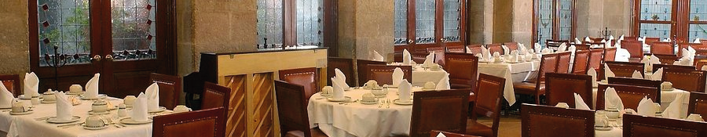
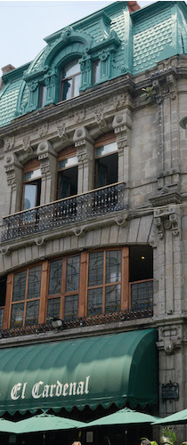

EL CARDENAL

El Cardenal es uno de los restaurantes más emblemáticos y tradicionales de la Ciudad de México. Fue fundado en 1969 por Oliva Garizurieta y Jesús Briz en una antigua casona ubicada en la calle de Moneda, junto al Zócalo capitalino. El objetivo inicial era sostener económicamente a su familia, pero con el tiempo el restaurante se convirtió en un símbolo de la cocina mexicana tradicional.
Desde sus inicios, El Cardenal se enfocó en rescatar recetas tradicionales mexicanas y técnicas artesanales como:
- elaboración propia de pan,
- chocolate batido artesanal,
- tortillas hechas desde el nixtamal,
- y natas frescas elaboradas con leche bronca.
Actualmente es considerado uno de los restaurantes más importantes para preservar la gastronomía mexicana tradicional en CDMX. Incluso ha sido visitado por políticos, artistas, intelectuales y turistas internacionales.
La sucursal más famosa, ubicada en Palma 23 en el Centro Histórico, se encuentra dentro de un edificio porfiriano de estilo francés restaurado en los años 80. El inmueble perteneció antiguamente a la compañía eléctrica “Amacuzac” y tuvo que pasar por un proceso minucioso de restauración para recuperar:
- herrería original,
- detalles ornamentales,
- pisos antiguos,
- y elementos clásicos de la arquitectura porfiriana.
El espacio combina:
- techos altos,
- ventanales amplios,
- lámparas clásicas,
- madera tallada,
- y decoración elegante inspirada en las antiguas casas mexicanas.
Su arquitectura ayuda a crear un ambiente muy tradicional y sofisticado, por eso muchas personas lo consideran una experiencia cultural además de gastronómica.
